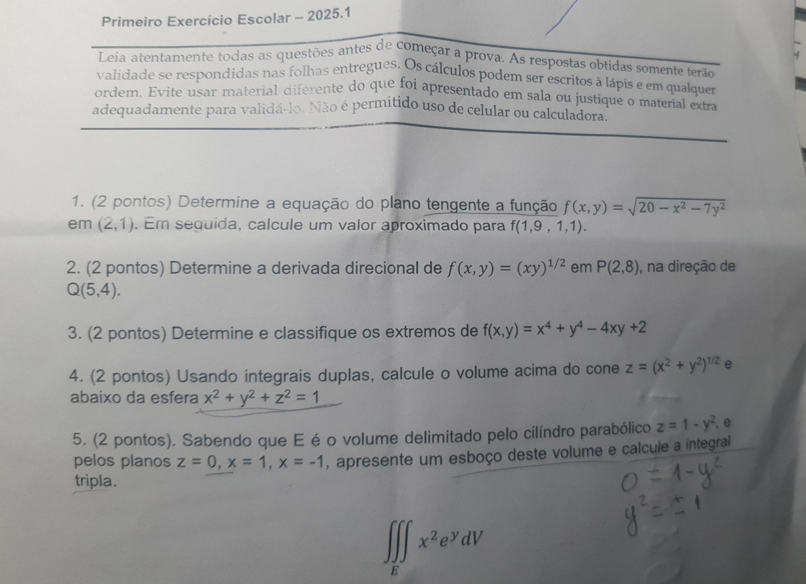

Handmark¶
Handmark is a Python CLI tool that converts handwritten notes from images into structured documents. It supports multiple AI providers (Azure AI and Ollama) and output formats (Markdown, JSON, YAML, XML), making it easy to digitize handwritten content with flexible processing options.

Key Features¶
- ✨ Multi-Format Document Generation
- Transform handwritten notes into Markdown, JSON, YAML, or XML
 Intelligent Title Extraction
Intelligent Title Extraction- Automatically detects and extracts titles from content for smart file naming
- 🤖 Dual AI Provider Support
- Choose between Azure AI (remote) or Ollama (local) for processing
- ⚡️ Easy CLI Interface
- Simple, intuitive commands with rich console output and comprehensive error handling
- 🔧 Advanced Model Configuration
- Select from multiple AI models with availability validation
- 🔒 Secure Authentication
- GitHub token-based authentication with secure local storage
- 📁 Flexible Output
- Customize output directory and filename options with intelligent fallbacks
- 🏠 Local Processing Option
- Use Ollama for completely local, offline image processing
Quick Start¶
Get up and running with Handmark in three simple steps:
That's it!
Your handwritten notes will be converted to a Markdown file automatically.
Architecture Overview¶
graph TD
subgraph "User Interface"
A[User] -->|CLI Commands| B{Handmark CLI}
end
subgraph "Application Core"
B --> C[main.py]
C --> D[config.py]
C --> E[model.py]
C --> G{ImageDissector}
end
subgraph "Providers"
G --> R[providers.factory]
R --> S[AzureProvider]
R --> T[OllamaProvider]
end
subgraph "Output Formats"
G --> M[Markdown]
G --> N[JSON]
G --> O[YAML]
G --> P[XML]
end
subgraph "External Services"
S --> I[Azure AI Vision]
T --> V[Ollama Local]
end
style A fill:#f9f,stroke:#333,stroke-width:2px
style B fill:#bbf,stroke:#333,stroke-width:2px
style G fill:#ccf,stroke:#333,stroke-width:2px
style I fill:#f96,stroke:#333,stroke-width:2pxExample Usage¶
Here's a real-world example of Handmark processing handwritten mathematical content:
Input Image¶

Handwritten mathematics exam with complex equations and instructions
Processing Command¶
Output Result¶
The tool automatically:
- Analyzes the handwritten content
- Extracts text and mathematical notation
- Detects the title "Primeiro Exercício Escolar - 2025.1"
- Converts to properly formatted Markdown with LaTeX
View full output
# Primeiro Exercício Escolar - 2025.1
Leia atentamente todas as questões antes de começar a prova. As respostas
obtidas somente terão validade se respondidas nas folhas entregues. Os
cálculos podem ser escritos à lápis e em qualquer ordem. Evite usar
material diferente do que foi apresentado em sala ou justifique o material
extra adequadamente para validá-lo. Não é permitido uso de celular ou
calculadora.
1. (2 pontos) Determine a equação do plano tangente a função$f(x,y) = \sqrt{20 - x^2 - 7y^2}$ em (2,1).
Em seguida, calcule um valor aproximado para $f(1,9 , 1,1)$.
2. (2 pontos) Determine a derivada direcional de$f(x,y) = (xy)^{1/2}$ em $P(2,8)$, na direção de $Q(5,4)$.
3. (2 pontos) Determine e classifique os extremos de$f(x,y) = x^4 + y^4 - 4xy + 2$
4. (2 pontos) Usando integrais duplas, calcule o volume acima do cone$z = (x^2 + y^2)^{1/2}$ e abaixo da esfera $x^2 + y^2 + z^2 = 1$
5. (2 pontos). Sabendo que E é o volume delimitado pelo cilindro
parabólico$z = 1 - y^2$, e pelos planos $z = 0$, $x = 1$, $x = -1$,
apresente um esboço deste volume e calcule a integral tripla.
$$
\iiint_E x^2e^y dV
$$
Perfect OCR Accuracy
Notice how Handmark correctly interprets complex mathematical notation, preserves formatting, and even captures the instructions at the top of the exam!
What's Next?¶
Ready to get started?
Check out theInstallation guide to set up Handmark on your system, or jump to the Quick Start for a hands-on tutorial.
Learn More¶
- Installation Guide - Set up Handmark on your system
- Quick Start - Get started in 5 minutes
- Usage Guide - Comprehensive command reference
- Configuration - Customize Handmark behavior
- Troubleshooting - Common issues and solutions